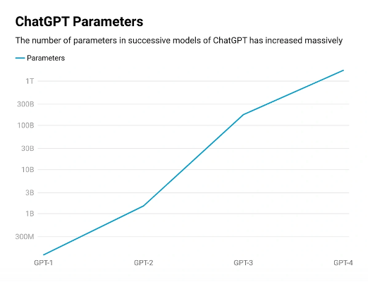
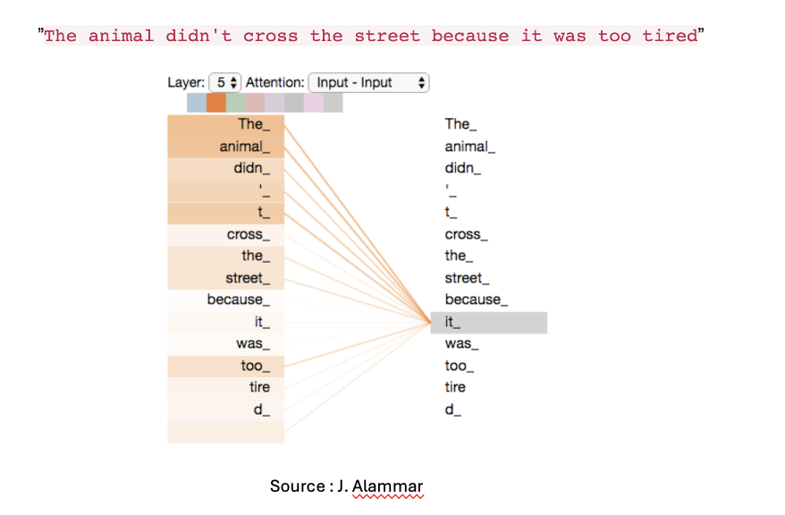
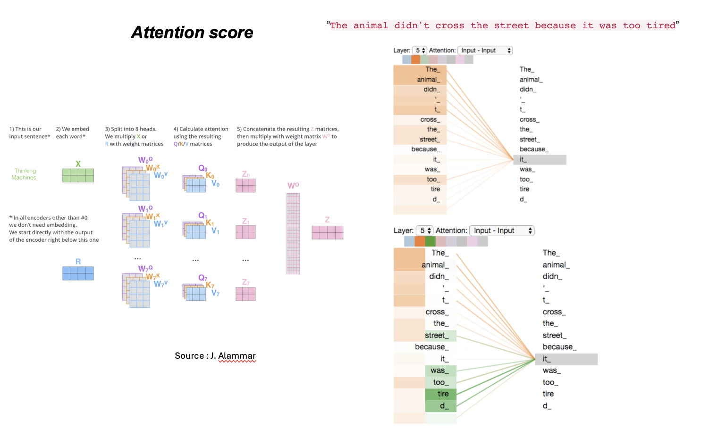
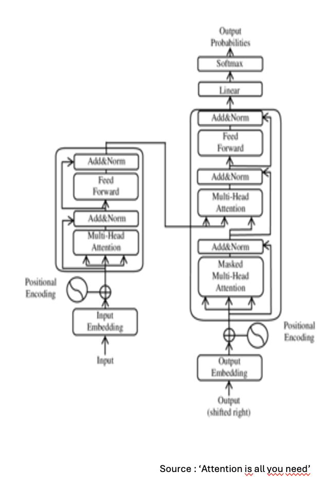

An introduction to the Retrieval-Augmented Generation (RAG) architecture and to the evaluation of LLMs
This page aims in presenting the architecture of Retrieval-Augmented Generation in the context of Large Language Models (LLM) and transformers.
Note
Elements presented here are based on the two resources Hands-On Large Language Models (J. Alammar, M. Grootendorst, O'Reilly, 2024) and AI ENgineering (C. Huyen), O'Reilly, 2024.
LLMs and Transformers in a nutshell
A bit of history
Cognitive mechanisms involved when learning a language remain mostly unknown; however we may commonly share a simple and striking observation: learning a language at a non-child age is a complete different experience from the one we've been through while learning our mother language. This simple observation is pretty striking (and disturbing) as modern language follow strict rules (and associated exceptions) that should make it easy to learn and handle. On the other hand during our very first years we learned the basics of a language as a social experience without pre-existing knowledge of grammar rules. This simple remark leads to the deeply confusing and counter-intuitive remark that Language is a unstructured data.
Producing an autonomous systems dedicated to the understanding and production of language is not new and dates back to the mid of 20th century giving birth to the field of Natural Programming Languages (NPL). Back then, the algorithms consisted in a nested sequence of if case instructions relying on the grammatical rules that structuring a language.
The emergence of LLMs and Transformers
Modern technology and especially the development of computing power adopted a completely different point of view: mimicking our early ages experience of learning language using some hidden correlations between words and context. The revolution came with Large Language Models (LLM) that were able to produce a form of language understanding from existing resources in a self-supervised way. Large models here refer to indeed the imprecise scale of these models as illustrated below (by the data given by OpenAI; recall that 1 Billion = \(10^{12}\)):

The size of the model is of course part of its performance in performing tasks, however the main revolution that has lead to the success of LLMs is the notion of Transformer and more precisely of attention mechanism.
Note
The breakthrough paper is the famous "Attention is all you need" paper by A. Aswani et al., 2017.
The attention mechanism in a nutshell
The main concept is the notion of attention that provides a semantic knowledge to a sentence by letting the context enrich the representation of a given token; as follows:

An important input of Alawar's team is to make this process learnable and faster (compared to RNN) with the notion of Attention Head;

finally here is the classical architecture of a Transformer Block:

Foundation models
The transformer architecture is rich; it consists of a successive feedforward NN type layers; each of them being quite large in terms of number of parameters. As you have seen training (or should we say tuning) such systems require a huge amount of data and of compute (namely resources). As an example recall that Llama 2 was trained on 6 Trillion tokens representing a GPU cost of 5 million USD. Hence training from scratch such models leads to a scaling and means issue. This is why has emerged the call for using pre-trained models (via API or OpenSource). These models that became by now companions of our everyday life (GPT; Gemini; Llama; Claude; Deepseek; Mistral,...) are referred to foundation models as they may serve as a general basis for a large variety of task (with or without fine-tuning).
Note
Here we only refer to text models but of course all they all have been extended to multimodal models that is models that can handle different types of data that go beyond text (such as images, videos, ...) and that are trained on mixed inputs from these different formats.
LLM evaluation
C'est quoi le problème ?
At the end of the day, what matters most is the user experience. One can do academic research on well-used datasets to test the performance of an AI but this slightly differs from the user experience. On that regard on can distinguish different type of users with a variety of level of expertise on the task under interest. But :
how do we evaluate the performance of a LLM ?
This is a serious question. Of course the common issue is to evaluate the truth value of some elements of the answer (this will be related to hallucinations that we wil deal with in the next section) but the situation might be a bit more complex. Consider the two examples below :
Example
Consider a Q&A task. One wants to get some input regarding the wikipedia pages of 2 movies : Nolan's 'Interstellar' and the documentary 'A brief history of time' which is strictly speaking a documentary film by Norris. To the question 'How is the science in both movies ?' with two different LLMs one gets the answers :
- LLM1 : BHT is not a movie.
- LLM2 : Interstellar finds sources in [...]. BHT is rather a documentary than a movie but it is based on [...].
What is the right answer ? I would say that both are correct but how could I measure this and make it less subjective ? In that cases we constrained the system to answer based on the Wikipedia pages only which clearly introduced a bias in our task that has been handled very differently by both systems. Another source of concern is related to this one and is referred to bias and fairness and directly questions the nature of the dataset during training.
Hallucinations
We will come back later to the notion of evaluation; right now we focus on the notion of hallucination which is at the core of this course.
By hallucination we mean an output of a LLM-type system in which at least one element has a truth value equal to FALSE (in other words one statement is commonly admitted as false). One distinguishes at least three types of hallucinations :
- Input conflicting hallucinations: it consists in an inconsistency between the resources and the output
Example
- USER: When was Robert Redford born ?
- SYS: John Redford was born in ???
- Context conflicting hallucinations: the system fails in identifying the context (usually because of a lack of memory or compute power)
Example
- USER: A question on the Basket player Silver
- SYS: Answers produces a claim that the player was silver medalist during the last olympic games.
- Fact conflicting hallucinations: the system creates answers whose elements are directly in conflict with facts (from inner or outer resources available to the system)
Example
- USER: When did WW II ended ?
- SYS: WW II ended with the peace treaty of November 11th 1918.
Identifying the reasons of hallucinations is not an easy task but it clearly depend on the compute power available of the system and of the creativity level (like the temperature parameter). However it might be possible to try to limit them; this is the raison d'être of RAG architectures.
"Quality" of the training data set
Foundations model need a huge amount of data during the training process (recall the 'simple' first BERT has been trained over all available Wikipedia pages in 2018); guaranteeing the reliability of each of these resources is a challenge. However among all the use cases in industrial applications of foundations models one of them is to perform semantic search (that is searching by meaning and not keyword matching) or Q&A within a set of resources that in contradistinction with the aforementioned training data set is build from approved resources.
Library of Alexandria
LLM systems contain an impressive amount of data, but including all available source of knowledge on the web for instance seems unaccessible and also pointless. Pointless for at least two reasons. Firstly, if one need answers regarding a specific memory source that may be confidential (like health data, or clients data) this is by definition not public. On the contrary for public resources, chatbots like GPTs are able to make a research task to access the resource. So in both cases it is completely natural to include the possibility that an LLM will have to base its generated answer on external resource that it has to choose properly. The 2017 paper "Reading Wikipedia to Answer Open-Domain Questions" (Chen et al., 2017) describes this task where an LLM has to spot the right Wikipedia page given a query and then generate an answer based on the information collected in that specific page. This procedure is named retrieve-then-generate pattern.
The previous technique has been refined three years later by Lewis et al. in "Retrieval-Augmented Generation for Knowledge-Intensive NLP tasks" where the retrieved information is used as an additional context to the query. This is the RAG procedure and this is what we are going to explore now.
The RAG architecture(s)
The RAG architecture will be composed of two elements : a retriever component and a generative component (a decoder).

Let us focus on the retrieval part.
Dense/sparse Retrieval - term-based / embedding retrieval
Retrieving an appropriate resource within a data base dates back to the beginning of computer science and many algorithm are available for that regard. As this class is dedicated to the RAG I would say that the main contribution of Deep Learning on this question is to move from the lexical search (term-based retrieval) to the semantic one (semantic retrieval) or to put it differently from the simple "Ctrl + f" search to a query search based on the meaning.
Term-based retrieval refers to all algorithms that are based on a keywords match. These algorithms usually are based on a one-hot vector type encoding. For instance each key word is encoded as a vector with all coordinates put to 0 except one which is set to 1. The dimension of each vector is then the cardinal of the vocabulary. This representation might be useful but obviously it misses the point of creating a semantic understanding. As an example is one is interested in the keyword "hot dog" the system will look for the two items "hot" and "dog" but most likely most of the hits will miss the purpose of the query. Of course some algorithms tried to come around these flaws but they still work in a different manner than the one making use of embedding that we will describe below (for instance among the most used one may recall the TF-IDF Algorithms - Term Frequency-Inverse Document Frequency). Finally let us mention that these type of algorithms are usually referred as sparse retrieval as the one hot vectors form a sparse data (in is original sense : most of the information is set to 0).
The second approach which has been made attainable thanks to transformer technology is the one based on a semantic analysis making use of an encoder in which information is embedded in a vector space and treated using attention heads. You have seen already this approach we simple elude to it in the next lines.
Chunks and embeddings
As mentioned one of the first application one may think of is semantic search which consists in looking for information based on the meaning of a query and not simply based on a keyword matching. As language may not been easily embedded into a mathematical space in spite of grammatical rules (that a Human user learn with some variable effort) we make use of the embedding strategy that you have already experienced while studying LLMs.
In the classical approach of an encoder one make use of the tokenization step which splits a given text into tokens; each of this token is embedded and a vocabulary is formed. We are going to follow a similar procedure but this time we aim in embedding texts that we name chunks. In order to compare the semantic feature of different texts (chunks) we embed them into a (high dimensional) vector space to provide their vector representation. The we use a metric to transform semantic relevance as distance between the texts and the query.
Example
Query : What is the capital of France ?
Text 1 : Japan is a country in Asia
Text 2 : Paris Hilton likes chihuahuas
Text 3 : Paris is the french capital since the 6th century

Another important issue is the chunking procedure. Indeed, the splitting strategy will be of interest since as an input we have documents (resources) that need to be embedded on a vector space (even for very high dimensional spaces giving somehow a semantic score to a block of sentences might be pointless); and at the end of the day one need to spot the precise information related to the query. The procedure reads as follows :

Hence if we come back to the architecture we can make precise some elements by including the vector database.

The Retrieval procedure : finding the closest hits
Index
Once we have a database (which takes the form of a vector database) one can embed the query and find within the database the closest elements related to the query. This is the role of the index. A database would be point less if it wouldn't be associated to a search device for which an index, that is a way to sort and store the data is crucial. Hence, when a new chunk is introduced to the base, it is embedded and the corresponding vector is indexed.
Retriever
Warning
Close but how close ?!
Obviously the closest result might not be the good one (if all the resources we have deal with Paris the mythologic character of the Trojan war or with Paris Hilton all these search will not answer the query). This is why usually semantic search systems will be based on a fundamental component the search index which is also trained in Q&A task to improve performances on finding the closest results. Searching within a vector base is a task which goes beyond the RAG tech and many algorithms have been developed since decades for various purposes. In our case we will make use of the FAISS (Facebook AI Similarity Search) library (developed by Johnson et al. 2017).
Note
We eluded to the evaluation of LLM and the quality of the indexing and retrieval could deeply impact that. Some metrics are dedicated to this aspect : Context precision and Context recall we will come back to this during the lab session.
So finally what is RAG ?
We now have all the ingredients to define the RAG architecture, which reads as follows : enrich the context of the query to get a semantic enriched response.

Beyond classical RAG
Multimodal RAG
LLM allow to deal with several types of inputs (usually text, images, vidéos,...), it is possible to extend then the RAG technology to several type of resources.
Advanced RAG
The objective of RAG is to increase the context; but the choice of this context relies on the retrieval module (that is the index). One can increase the quality of retrieval by additional steps like presented below:


Among these improvements we point out the notion of reranking. Once the retrieved documents are available they come with a score (which translates the similarity with the query). But this ranking might not be the best one. To increase the semantic analysis/comparison between the query and the retrieved documents on may make use of a co-called cross-encoder that is another LLM to which it is asked to rerank the retrieved documents according to the query. This reranking in practice improves the quality of the retrieval and it may also reduce the number of retrieved documents. Then the rest of the pipeline is unchanged: the re-ranked documents are passed to the decoder together with the query.
Reality principle: Proprietary Models Vs. Open Source Models
We will discuss the matter during the Lab session but if one makes use of Open Source Models one should be concerned with (VRAM) memory issues. Indeed, loading an Open Source model requires a huge VRAM capacity.

Adding RAG and an index will of course increase the need of larger memory load.
Elements related to the evaluation of LLMs
This was somehow our original motivation: how to go beyond a user experience and how to rely on objective grounded elements to evaluate the performance of a LLM ? We are unfortunately not in position to answer this question, however we can now add new inputs to it. To do so we recall metrics (that are for instance provided in the RAGS library). These metrics are based on the comparison (and the use) of the elements : - the query - the reference (the documents available) - the retrieved context (retrieved documents) - the expected answer (if available) - the response
The the metrics aim in measuring how the response is built from these elements;

For example Metric "Faithfulness" comparee Response with Retried Context (in other words it aims in addressing the question To which extend the response is based on the RC ?)

We will (if time allows) test these metrics during the Lab. This is the end of this introduction to RAG.